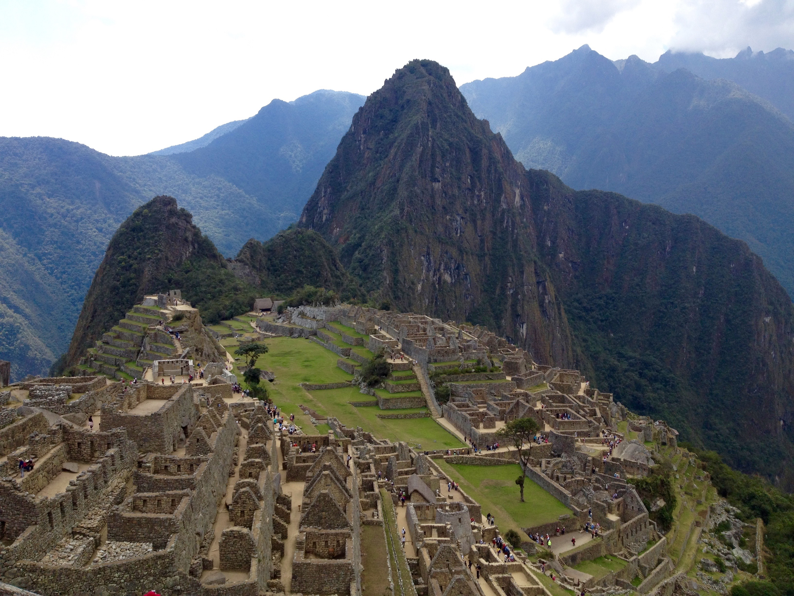

Antonio Montini
MACHU PICCHU

| Informazioni | |
|---|---|
| Civiltà | Inca |
| Data scoperta | 24 luglio 1911 |
| Ubicazione | Provincia di Urubamba (Perù) |
Il Machu Picchu, o anche Machu Pikchu ([ˈmɑtʃu ˈpixtʃu]; dai termini quechua machu – che significa "vecchio" – e pikchu, traducibile con "cima" o "montagna") è un sito archeologico Inca situato in Perù, nella valle dell'Urubamba, a circa 2.430 m s.l.m.
Vista nell'immaginario collettivo come i resti di un'antica e fascinosa città perduta, la località è oggi universalmente conosciuta sia per le sue imponenti ed originali rovine, sia per l'impressionante vista che si ha sulla sottostante valle dell'Urubamba circa 400 metri più in basso. Fa parte dei Patrimoni dell'umanità stilati dall'UNESCO, eletto nel 2007 come una delle Sette meraviglie del mondo moderno. È il terzo sito archeologico più grande del mondo dopo gli scavi di Pompei e Ostia Antica: nel 2003, più di 400mila persone hanno visitato le rovine e l'UNESCO ha espresso preoccupazione per i danni ambientali che un tale volume di turisti può arrecare al sito.
Le autorità peruviane, che ovviamente ricavano dei notevoli vantaggi economici dal turismo, sostengono che non ci siano problemi e che l'estremo isolamento della valle dell'Urubamba sia, da solo, sufficiente a limitare il flusso turistico. Periodicamente viene proposta la costruzione di una funivia per raggiungere la città dal fondovalle, ma finora la proposta non è passata.
Per sapere di più cliccare il bottone seguente.
Vista nell'immaginario collettivo come i resti di un'antica e fascinosa città perduta, la località è oggi universalmente conosciuta sia per le sue imponenti ed originali rovine, sia per l'impressionante vista che si ha sulla sottostante valle dell'Urubamba circa 400 metri più in basso. Fa parte dei Patrimoni dell'umanità stilati dall'UNESCO, eletto nel 2007 come una delle Sette meraviglie del mondo moderno. È il terzo sito archeologico più grande del mondo dopo gli scavi di Pompei e Ostia Antica: nel 2003, più di 400mila persone hanno visitato le rovine e l'UNESCO ha espresso preoccupazione per i danni ambientali che un tale volume di turisti può arrecare al sito.
Le autorità peruviane, che ovviamente ricavano dei notevoli vantaggi economici dal turismo, sostengono che non ci siano problemi e che l'estremo isolamento della valle dell'Urubamba sia, da solo, sufficiente a limitare il flusso turistico. Periodicamente viene proposta la costruzione di una funivia per raggiungere la città dal fondovalle, ma finora la proposta non è passata.
Per sapere di più cliccare il bottone seguente.